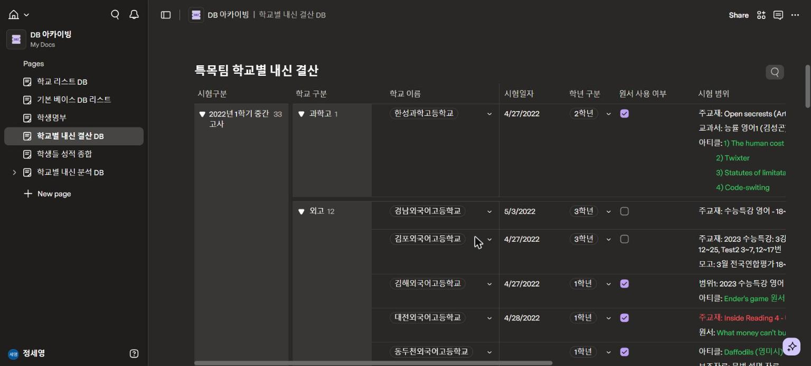

Coda로 학생 데이터를 정리하며 개발에 관심을 갖게 된 계기
밀당PT에서는 온라인 영어 학습 관리를 맡았습니다. 개발 업무는 아니었지만, 회사에서 쓰던 데이터 관리 도구 Coda를 다루면서 개발에 관심을 갖게 됐습니다.
- 한 일
- 학생 정보, 학습 관리 이력, 학생·학부모 상담 내역을 Coda 표로 관리했습니다.
- 흩어진 자료를 표로 정리하고 고치면서, 팀원들이 필요한 정보를 바로 찾을 수 있도록 묶음과 필터를 건 화면(뷰)을 만들었습니다.
- 느낀 점
- 데이터를 구조화해서 다른 사람이 쓰기 편한 도구로 만드는 일에서 가장 큰 성취감을 느꼈습니다.
- 매일 쓰던 학습관리 시스템(LMS)이 어떻게 동작하는지 이해하고, 직접 만들어 보고 싶어졌습니다.
- 이어진 것
- 2023년 에이콘 아카데미 부트캠프에 들어가 개발을 시작했고, 최우수로 수료했습니다. 이후 에듀테크 회사(라이너스)에서 LMS 백엔드를 직접 개발하게 됐습니다.
